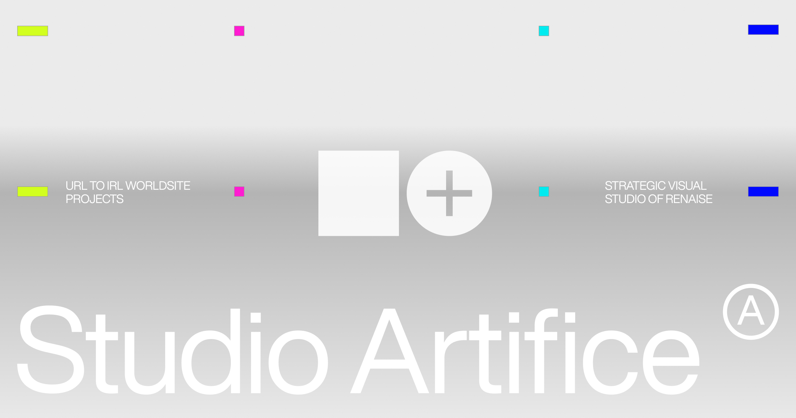
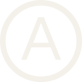
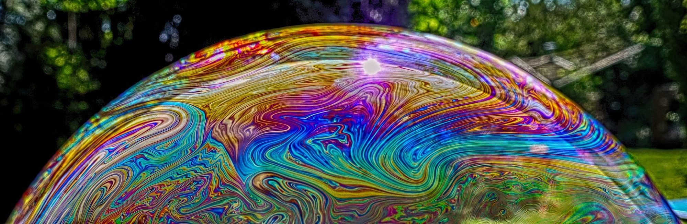
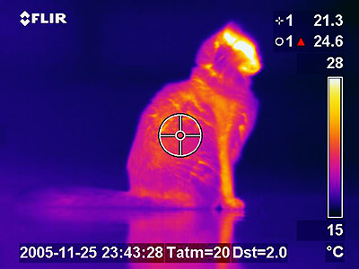
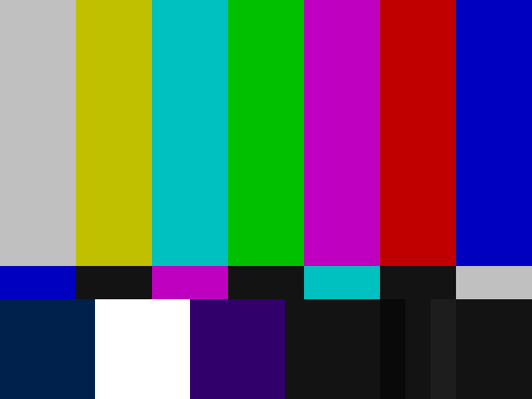
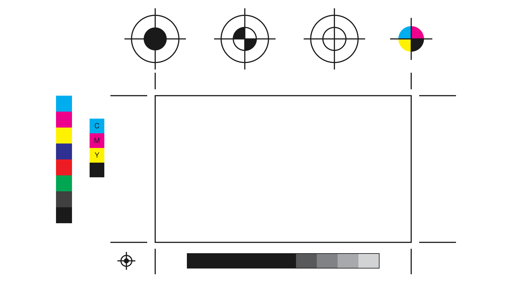

About
Studio Artifice is a strategic visual studio in New York, designing durable artifacts for AI companies, cultural institutions, and consumer brands.
Studio Artifice is a strategic visual studio in New York, designing durable artifacts for AI companies, cultural institutions, and consumer brands. The studio builds identity, websites and live experiences as one system, across four phases: strategy, identity, applications and production.
Studio Artifice is a strategic visual studio in New York, designing durable artifacts for AI companies, cultural institutions, and consumer brands. The studio builds identity, websites and live experiences as one system, across four phases: strategy, identity, applications and production.
Studio Artifice is led by Renaise, a visual prototyper and producer with eight years of identity work, from strategy through production. She works from New York with clients in consumer media, creative tools and deep tech, and leads creative direction at Artifice, a cultural nonprofit.
Phases
Mark





Favicons


Clear space
On the horizontal lockup, clear space is measured from the wordmark. The height of the Ⓐ monogram is not counted.
Incorrect use
Color
A grayscale ground, and four colors that each name a phase. Hover a swatch to copy its value.
Neutrals
The ground gradient is the one gradient from the masters: a light falloff behind a figure, never under text and never with a hue in it. It reads as lit, not filled.
The near-blacks, ink, panel and line, sit at L* 4, 8 and 14. A badly set screen merges them, so the black level check is built from exactly these three: if the line and panel steps vanish, the display is crushing blacks.
Color logic
Four phases, four colors: lime for Strategy, magenta for Identity, cyan for Applications, blue for Production. The set spans print and screen, with three near the process inks and one at the screen’s blue primary, and together they balance to a neutral gray. Each color is a reading on a declared scale, taken from thin-film interference, and appears only next to that scale. The row of four, in phase order and checked against its lightness, is the reference strip for every other color in the system.
Read off the film scale, thinnest to thickest: Production, Applications, Strategy, Identity. Set as a strip, they always run in phase order, each over its own lightness.
The four phase colors, in a flattened, blurred radial gradient, sit on the greyscale ground as a decorative layer.
Typography
One typeface for everything: Helvetica Now Display.
abcdefghijklmnopqrstuvwxyz
0123456789 · & ? ! ( )
Rules
Motion
Studio Artifice moves on one easing curve: a quick start that eases out in a fifth of a second, with no bounce or overshoot. Below are examples of the brand motion applied.
cubic-bezier(.22,1,.36,1)
Sting
Artifact
The brand figure is an artist's mannequin: the still-life subject, the proxy a draftsman observes when learning to see. It stands for observation itself.
Use the live figure on screens, at full width and always on black with its scale beside it.


Origins
Studio Artifice starts every project by looking closely, measuring what it finds and checking the work against something known. The brand identity design comes from tools built for observation.

Thin-film interferenceThe colors in a soap bubble come from how thin the film is at each spot. Each thickness shows its own color.For Studio Artifice, all four colors sit on that one scale, from thinnest to thickest.

Thermal image readingA thermal image comes with a bar that reads each color’s temperature. Without the bar, the colors mean nothing.The figure as a heat camera sees it. Point to any spot, by mouse, touch or arrow keys, and the scale beside it marks the reading.

SMPTE color barsBefore a broadcast, stations send stripes of fixed colors. Anyone down the line can check their screen against them.For Studio Artifice, the four squares are the studio’s own test strip. Each one stands for a phase of the work, always in order.

Registration marksEach ink is printed in its own pass, and a circle with a cross on every sheet shows whether the passes line up. Screens check color on the same circle and cross.For Studio Artifice, the screw, a circle with a cross cut out, comes from that target. The four phases are like four passes that line up into one piece of work, which is what the sting shows.
Voice
Write like an editor, not a copywriter: assume a peer, state rather than sell.
Do
- Flat declarative sentences a reader could check or dispute.
- Observation over declaration, material before concept.
- Warmth comes from noticing, not adjectives.
Don't
- ✕No exclamation points.
- ✕No aphoristic punchlines.
- ✕No reversals built for quoting.